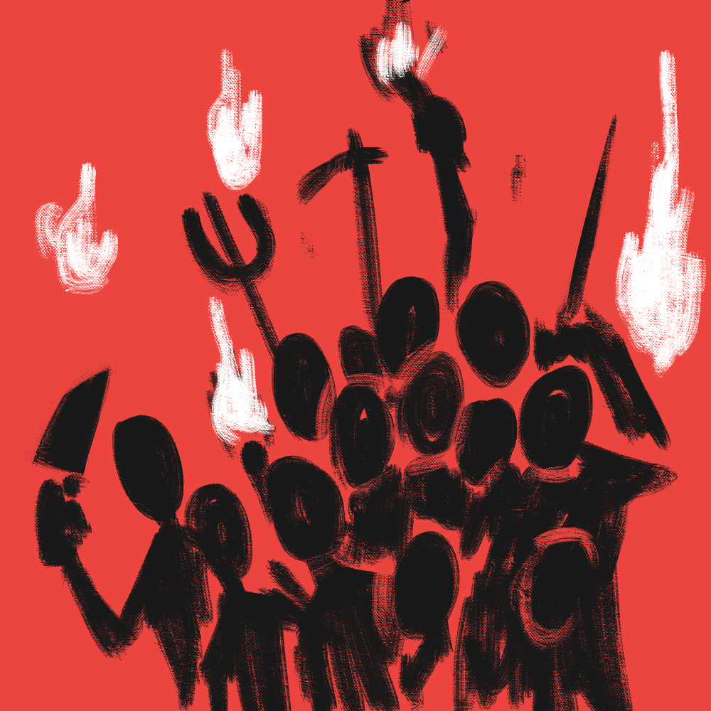
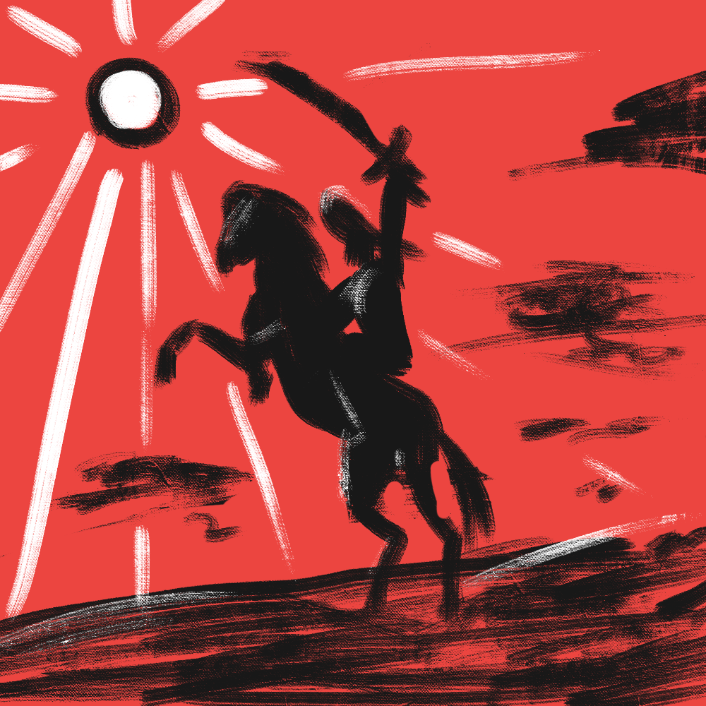
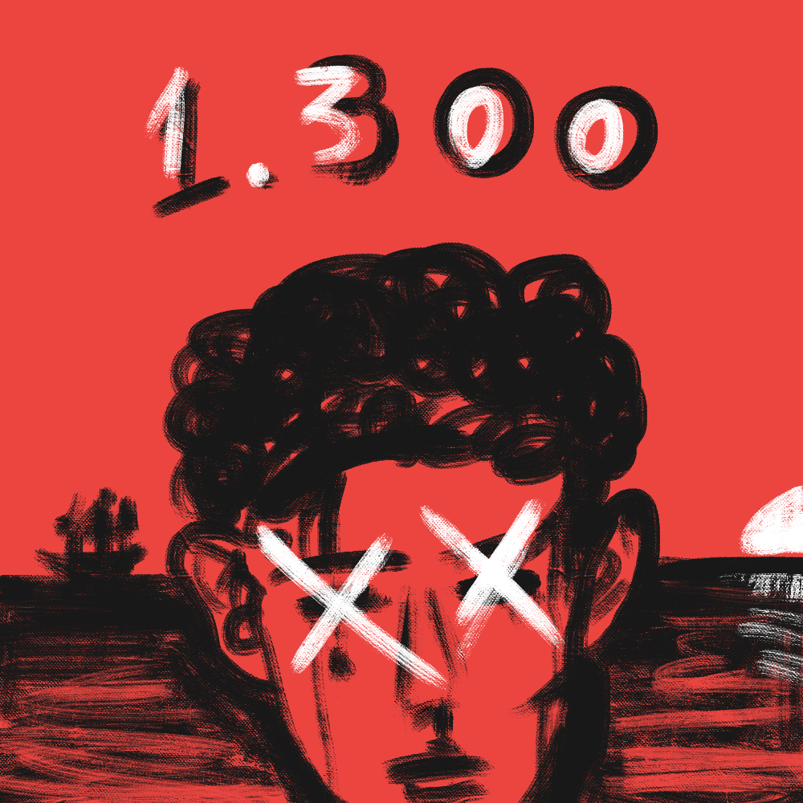
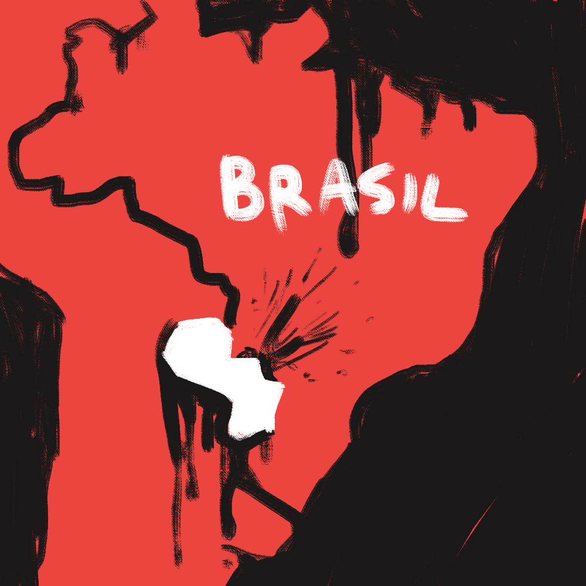
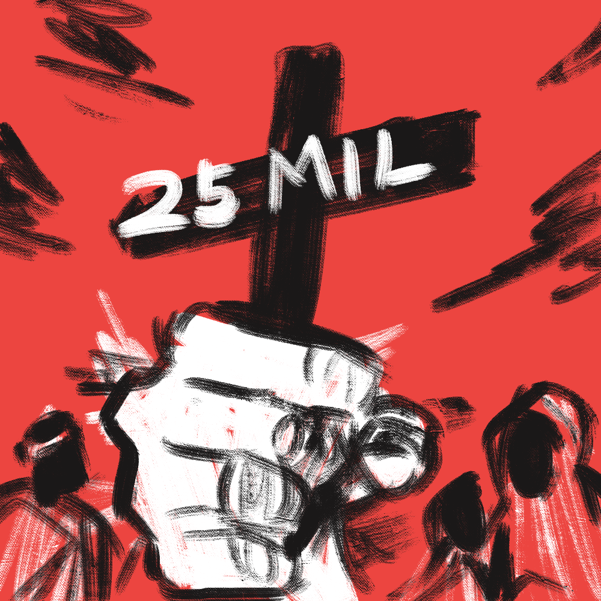
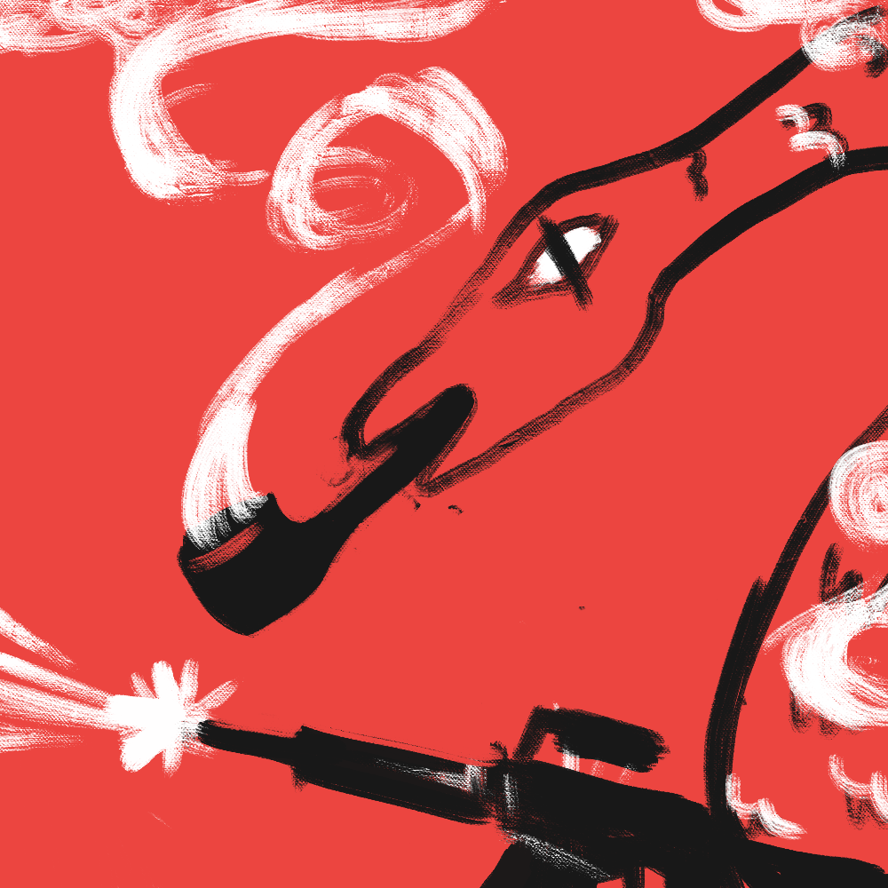

Guerras Brasileiras
|  |  |  |  |  |  |
| Revoltas Coloniais | Guerra de Independência | Guerra da Cisplatina | Guerra do Paraguai | Guerra de Canudos | Batalhas da FEB |
| (XVII - XVIII) | (1822 - 1824) | (1825 - 1828) | (1865 - 1870) | (1896 - 1897) | (1942 - 1945) |
| ● | ● | ● | ● | ● | ● |
Uma sequência de várias revoltas que aconteceram em um período de aproximadamente 100 anos – a primeira, no final do século XVII; a última, no final do século XVIII –, e, não por coincidência, essa foi a época de declínio e de dissolução do Brasil Colonial: onde o território era dividido e cada divisão administrada por nações específicas, sendo Portugal a mais expressiva nesse cenário.
As Revoltas Coloniais foram um reflexo, devido ao sistema explorador que era implantado pelos colonizadores. As principais revoltas (as que iremos abordar) podem ser classificadas em duas categorias: nativistas e separatistas. E o que isso significa? Até que é simples.
Nativistas se referem aos conflitos ocorridos entre colonos (aqueles que habitam nas colônias) e à defesa de interesses da elite colonial, envolve também a crise da economia da cana-de-açúcar. Essas foram as primeiras revoltas coloniais. Era um tipo de revolta localizada, como por exemplo uma revolta sobre uma região que cobrava altos impostos, como na revolta de Filipe dos Santos.
As separatistas serão abordadas à parte, e basicamente eram pautadas na independência em relação a Portugal. São revoltas de grande manifestação (e alcance).
Essa rebelião foi liderada por dois irmãos: Tomás e Manuel Beckman. Aconteceu na região do Maranhão, e teve como incitamento as promessas que os portugueses fizeram (e não cumpriram) à elite e aos jesuítas, depois de uma crise e de um enfraquecimento das relações comerciais no Nordeste. Todos os que “ajudaram” nessa revolta foram penalizados. Seja prisão perpétua ou pena de morte.
Emboaba foi um termo de origem tupi usado de forma pejorativa para se referir à forasteiros. Forasteiros esses que vieram ao Brasil na época do ouro. A época em que a economia muda o foco da cana-de-açúcar do Nordeste para os recém-descobertos metais preciosos do Sudeste. O ego que levou à guerra, e uma guerra que envolveu muitas mortes.
Mascate era o nome dado aos comerciantes portugueses da região de Recife/Olinda. Depois da crise açucareira, Recife deixou de ser “subordinado” de Olinda, e conseguiu resistir à crise. E isso atraiu os mascates. Os interesses dos políticos (sobre os mascates) movimentaram uma guerra durante um ano, em que a cidade de Recife foi dominada por Olinda.
Filipe dos Santos era um fazendeiro da região de Minas Gerais que também cuidava do transporte de mercadorias, e movimentou a população através de discursos, promovendo uma grande revolta contra os portugueses. Envolveu mais de 2000 rebeldes. Essa revolta aconteceu devido à uma medida dos Portugueses por causa do contrabando de metais preciosos como o ouro. Os portugueses cobravam 20% do ouro – se uma pessoa tivesse 5 barras de ouro, uma deveria ser entregue como taxa para o governo – e, insatisfeitos com isso, as pessoas aderiram os discursos de Filipe e começaram a rebelião.
A Inconfidência Mineira fracassou. A ideia era tornar a capitania de Minas Gerais uma república independente, e essa ideia surgiu da elite socioeconômica, frente a altos impostos cobrados pelos portugueses – embora não somente estes estavam envolvidos, mas também médicos, fazendeiros, intelectuais, militares; liderados pelo militar Tiradentes – orientados por uma visão política iluminista, que estava se popularizando na época.
O movimento foi denunciado diversas vezes antes que pudessem inicia-lo, sendo assim, as autoridades tomaram providências drásticas, que causaram um resultado trágico. Os nomes denunciados foram condenados a diversas penalidades. Isso inclui degredo para a África, prisão perpétua e enforcamento. Mas, antes que fosse aplicada a pena, uma carta enviada por d. Maria, rainha de Portugal, concedeu o perdão real a todos, menos a Tiradentes.
Tiradentes foi enforcado, esquartejado, e partes do seu corpo foram espalhadas no “Caminho Novo” (que era área de sua responsabilidade como militar), uma estrada que ligava o Rio de Janeiro a Minas Gerais. Sua cabeça foi colocada em exposição na praça central de Vila Rica, atual Ouro Preto.
Apesar da triste realidade que Tiradentes enfrentou, esse movimento foi de grande importância na história do Brasil. Pois representou a força e a vontade do povo brasileiro em se tornarem livres e independentes.
A Conjuração Baiana, assim como a Inconfidência Mineira, foi uma conspiração contra Portugal e sua opressão, foi uma tentativa de tirar as mãos de Portugal sobre a Bahia, e acabar com a escravatura. Movimentada pela insatisfação da elite com o domínio metropolitano e também pelo descontentamento popular, sobretudo com a falta de alimentos, e por isso também estes eram cobrados por altas taxas.
O diferencial desse movimento também foram as pessoas envolvidas. Escravizados, negros livres, brancos pobres e mestiços, que exerciam as mais diferentes profissões, como sapateiros, pedreiros e soldados. A população mais pobre estava intimamente envolvida. Mas, assim como em Minas, esse movimento não correu bem; os portugueses descobriram a conspiração e infelizmente ainda mais pessoas foram punidas. Punições semelhantes às mencionadas anteriormente – degredo para a África, prisão perpétua e enforcamento.